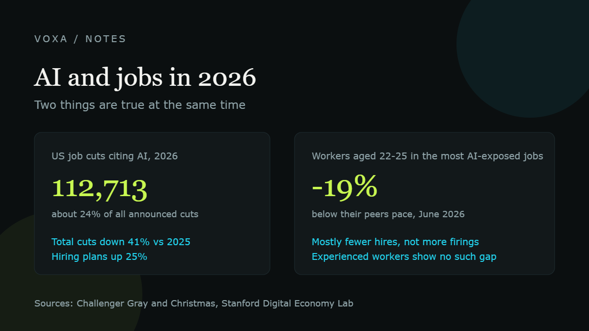

Will AI take my job? What the data actually shows in 2026

Quick answer
AI is not wiping out jobs across the board. Total US job cuts in 2026 are down about 41% from last year, and hiring plans are up. What is changing is the bottom of the ladder: employment for workers aged 22 to 25 in the most AI-exposed jobs now sits about 19% below where it would be if it had kept pace with their peers. AI is closing the door on entry-level work faster than it is firing anyone.
Key numbers
- US job cuts citing AI in 2026 to July: 112,713, about 24% of all announced cuts
- Total announced US job cuts in 2026 to July: 477,033, down 41% year over year
- Announced hiring plans: 107,500, up 25% and the strongest January to July since 2023
- Workers aged 22 to 25 in the most AI-exposed occupations: employment about 19% below their peers, up from a 15% gap a year earlier
- Salesforce support headcount: 9,000 down to about 5,000 because of AI agents
The number that scares people
In July 2026, US employers announced 33,429 job cuts, the lowest monthly total in two years. At the same time, artificial intelligence led the list of reasons for those cuts for the fifth month in a row, at 10,970. So far this year AI has been cited in 112,713 announced cuts, roughly a quarter of everything. In June it was the single biggest reason at 31%.
Now read the other half. Through July, total announced cuts were 477,033, down 41% from the same period in 2025. Announced hiring plans were 107,500, up 25% and the strongest January to July since 2023.
So both things are true. AI is the reason companies give most often when they cut, and companies are cutting far less than they were a year ago. That is not a mass extinction. It is a reshuffle, and reshuffles always hurt someone specific.
Where it actually bites: the first rung
Stanford researchers tracked employment for young workers in jobs most exposed to AI, using payroll data. Their finding, updated in August 2026: employment for 22 to 25 year olds in highly AI-exposed occupations sits about 19% below where it would be if it had grown at the same pace as similar workers in less exposed jobs. A year earlier that gap was 15%.
The important detail is how it happens. The adjustment comes from reduced hiring, not from more people being fired. Experienced workers show no comparable gap. Software developers aged 22 to 25 are down nearly 20% from their 2022 peak, while total developer employment is roughly flat.
A separate Stanford study looked at 1.25 billion job postings and 154 million employment records across 41 countries. Firms adopting AI shifted their workforce towards senior people. Junior roles shrank as a share of the team, with some evidence of modest overall job growth.
Plain version: the work did not disappear. The apprenticeship did.
What the all-in companies did
Salesforce is the clearest case. Marc Benioff said the company cut its support headcount from 9,000 to about 5,000 because AI agents handle more cases, and that AI does 30% to 50% of the work at the company. Then there is Klarna, which automated two-thirds of its chats and later started hiring support people again because the all-AI version did not hold.
Put those side by side and the pattern is the same one you see everywhere. AI replaces tasks cleanly. It replaces whole jobs messily.
Who is hiring instead
Upwork's 2026 skills data shows demand for skills that explicitly mention AI grew 109% year over year, against 23% for other in-demand skills. The fastest movers were AI video generation and editing, up 329%, AI integration at 178%, and AI data annotation at 154%. Freelancers who use AI earn around 34% to 40% more per hour than those who do not.
There is a catch in that same data. Work that is easy to describe, like generic AI content, is falling in price even as volume grows: AI creative production contract starts rose 90% while earnings per contract dropped 13%. Doing the easy AI thing is becoming the cheapest thing.
| What you do | Direction in 2026 |
|---|---|
| Answer routine tickets, type routine documents | Under pressure, mostly through fewer new hires |
| Junior coding and generic AI content | Getting crowded and cheaper |
| Connecting AI into a business process | Strong demand, up 178% on Upwork |
| Judgement work: decisions, accountability, messy cases | Holding up, and paid a premium when AI is used well |
What we would do if we were worried
Three things, in order. First, move towards the decision and away from the task. The person who chooses what gets published, shipped or refunded is harder to remove than the person who types it.
Second, use AI to do the work of the role above yours. If your manager spends two hours a week writing reports, write better reports with AI and you have just made yourself the obvious next hire.
Third, keep one thing in your work that a machine cannot sign its name to. Approval, liability, taste, the awkward phone call. Those are still jobs.
Where these numbers come from
Plain links to the original sources, so you can check every figure yourself. We do not take sponsorships and we do not get paid for these links.
- Stanford Digital Economy Lab: the AI employment gap for young workers has widened to 19%
- Stanford Digital Economy Lab: how does AI change labour demand? Evidence from 41 countries
- Challenger, Gray & Christmas: July 2026 job cut report
- Challenger, Gray & Christmas: June 2026 job cut report
- FOX Business: Salesforce cuts 4,000 jobs due to AI, CEO says
- Upwork: In-Demand Skills 2026
- Upwork: Future Workforce Index 2026
Common questions
Will AI take my job in the next few years?
The data says AI is more likely to take parts of your job and the entry-level version of your job than the whole thing. Total US job cuts fell 41% in 2026 against the year before, while AI became the most cited reason for the cuts that did happen.
Which jobs are safest from AI?
Work that needs physical presence, a licence, direct accountability, or judgement in messy real-world situations. Trades, care, sales with relationships, and senior decision roles have held up better than routine desk work.
Should I still learn to code?
Learn to build with AI, not to type boilerplate. Junior developer employment for 22 to 25 year olds is the single hardest-hit group in the Stanford data. The people getting hired combine a subject they know deeply with the ability to wire AI into it.
Is the AI job story all bad news?
No. Announced hiring plans in the US were up 25% through July 2026, and demand for AI integration skills on Upwork grew 178%. The pain is concentrated among people looking for their first job, not among experienced people in the same field.